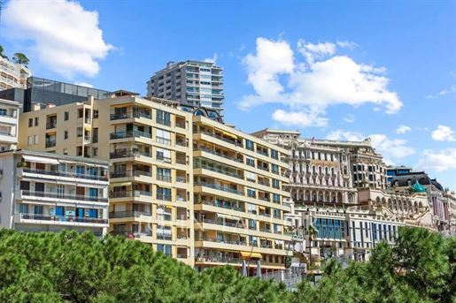

Turizmus | Pénzügyek & Ingatlanpiac | Szolgáltatások | Statisztika
Monaco stabil és diszkrét bankrendszere a világ egyik vezető magánvagyon-kezelési központja, amely kiemelkedő pénzügyi biztonságot nyújt. A hercegség vonzó adókörnyezete – különösen a személyi jövedelemadó hiánya – folyamatosan vonzza a külföldi tőkét és a tehetős magánszemélyeket. A helyi pénzintézetek szigorú nemzetközi szabályozás mellett működnek, és kifejezetten a high-net-worth (magas nettó értékű) ügyfelek igényeire specializálódtak.
A rendkívül korlátozott terület miatt Monaco büszkélkedhet a világ legdrágább ingatlanpiacával, ahol a luxuslakások négyzetméterárai rekordmagasságokban mozognak. A folyamatos helyhiány arra kényszeríti az építőipart, hogy merész tengerpart-bővítési projektekkel és futurisztikus felhőkarcolókkal nyerjen új életteret. Minden új beruházás a legmagasabb szintű luxust ötvözi a szigorú környezetvédelmi és fenntarthatósági előírásokkal.
